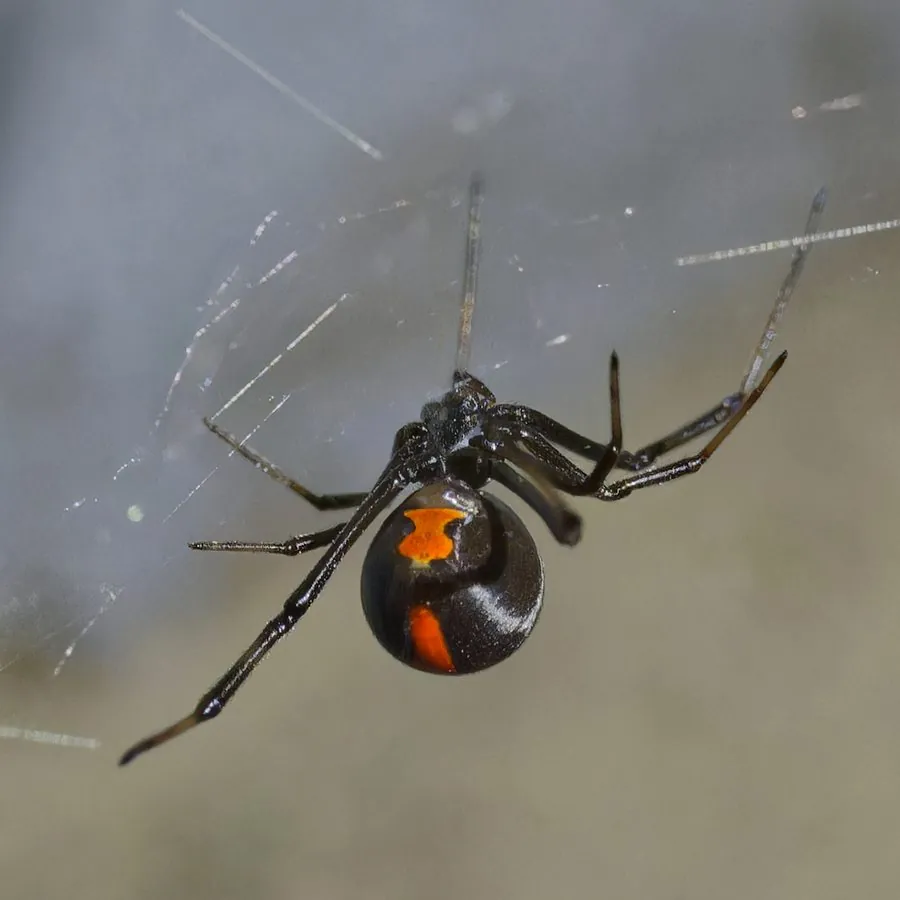

蛛形动物 · 动物界
红背蜘蛛 Latrodectus hasselti

澳大利亚常见的寇蛛，雌蛛背部有醒目的红色条纹，毒性较强，被咬后可出现剧痛和全身症状，需及时就医。
- 分类
- 门节肢动物门纲蛛形纲目蜘蛛目科球蛛科属寇蛛属
- 栖息环境
- 干燥灌丛、石堆、杂物堆、栅栏与房屋角落
- 地理分布
- 澳大利亚的温带与干旱地区
- 保护级别
- IUCN 暂无评估；非中国原产，在中国无保护级别
物种志
红背蜘蛛雌蛛体长 8–10 毫米，足展 20–25 毫米，体色漆黑发亮，腹部背面有一条鲜红色的宽带，腹面有红色沙漏状斑纹；雄蛛仅 3–4 毫米，体色浅褐，背部有白色或红色斑纹。它结不规则的乱网，隐藏在石块、杂物堆、栅栏和房屋角落，夜间捕食昆虫和其他小型节肢动物。
它分布于澳大利亚的温带和干旱地区，栖息于干燥的灌丛、石堆和人类居所附近。雌蛛产下数个卵囊，每个卵囊含 100–300 枚卵，母蛛会守护卵囊一段时间。红背蜘蛛毒性较强，毒液含神经毒素，被咬后局部剧痛并向周围扩散，可能伴随肌肉痉挛、出汗、恶心等症状，需避免接触并及时就医；澳大利亚有相应的抗毒血清。雌蛛在交配后常捕食雄蛛，“黑寡妇”家族因此得名。
形态与习性
- 食性昆虫和其他小型节肢动物
- 体长雌蛛 8–10 mm，雄蛛 3–4 mm
- 寿命雌蛛约 1–3 年
- 繁殖卵生，每卵囊 100–300 枚，母蛛护卵
- 活动节律夜间活动，白天藏在乱网附近
- 毒性毒性较强，被咬可致剧痛和肌肉痉挛，需及时就医
趣味知识
- 红背蜘蛛雌蛛背部有一条鲜红色宽带，是它最醒目的标志。
- 它和黑寡妇同属寇蛛属，毒液同样以神经毒素为主。
- 澳大利亚有专门针对红背蜘蛛的抗毒血清，被咬后及时就医很重要。